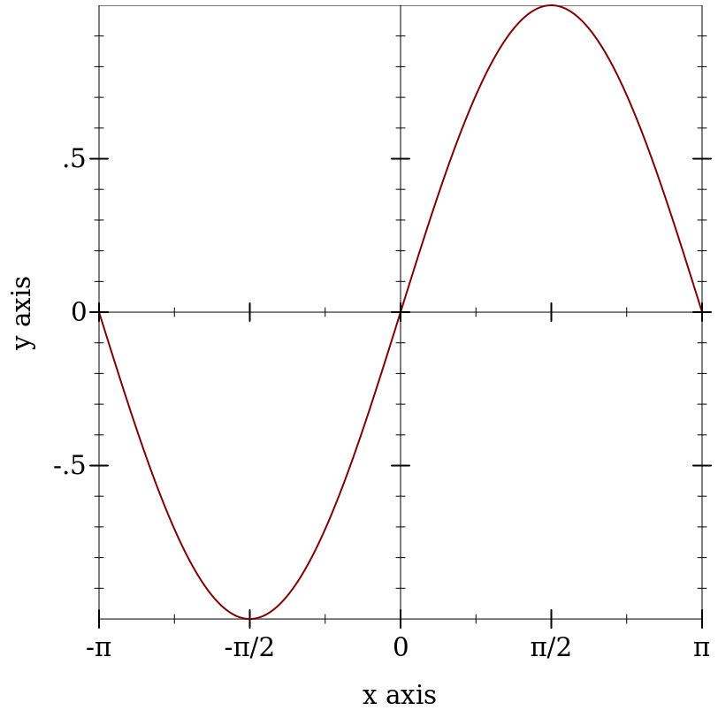

8.9
5 非渲染器
| (require plot) | package: plot-gui-lib |
以下函数创建 nonrenderers, 或在绘图中不画任何东西的绘图元素。
procedure
(x-ticks ts [#:far? far?]) → nonrenderer?
ts : (listof tick?) far? : boolean? = #f
procedure
(y-ticks ts [#:far? far?]) → nonrenderer?
ts : (listof tick?) far? : boolean? = #f
procedure
(z-ticks ts [#:far? far?]) → nonrenderer?
ts : (listof tick?) far? : boolean? = #f
尽管 ticks-add 允许在一个轴上放置任意的主要和次要的刻度线, 但它不允许这些刻度线的格式与同一轴上的其他刻度线不同。 使用这些函数中的一个来获得最大的控制。
Example:
> (parameterize ([plot-x-ticks no-ticks]) (plot (list (function sin (- pi) pi) (x-ticks (list (tick (- pi) #t "-π") (tick (* -3/4 pi) #f "") (tick (* -1/2 pi) #t "-π/2") (tick (* -1/4 pi) #f "") (tick 0 #t "0") (tick (* 1/4 pi) #f "") (tick (* 1/2 pi) #t "π/2") (tick (* 3/4 pi) #f "") (tick pi #t "π"))) (axes)))) 
当考虑使用这些函数之一时,请记住,小刻度的标签永远不会被画出来,
而且包括一个 z-ticks 的非渲染器不会在等高线图中添加额外的等高线。
procedure
(invisible-rect x-min x-max y-min y-max) → nonrenderer?
x-min : (or/c rational? #f) x-max : (or/c rational? #f) y-min : (or/c rational? #f) y-max : (or/c rational? #f)
返回一个非渲染器,它只是占用了绘图中的空间。
使用它可以使绘图区域包括一个最小的矩形。
procedure
(invisible-rect3d x-min x-max y-min y-max z-min z-max) → nonrenderer? x-min : (or/c rational? #f) x-max : (or/c rational? #f) y-min : (or/c rational? #f) y-max : (or/c rational? #f) z-min : (or/c rational? #f) z-max : (or/c rational? #f)
返回一个非渲染器,它只是在绘图中占用空间。
使用此方法可以使绘图区域包括一个最小的矩形。
参见 invisible-rect 的 2D 例子。